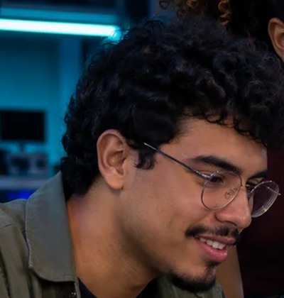

Edição 2026
Semana
Acadêmica de
Tecnologia
Conectando conhecimento, inovação e oportunidades.
- Quando
- a
- Onde
- FEPI • Centro Universitário de Itajubá
Destaques do evento
-
Palestras 12+
Ideias que antecipam os próximos movimentos da tecnologia.
-
Workshops 08
Prática guiada para transformar conhecimento em projetos.
-
Networking 500+
Conexões entre estudantes, especialistas e empresas.

Sobre o evento
Onde a curiosidade encontra o futuro
A Semana Acadêmica reúne estudantes e profissionais da área de Tecnologia da Informação para compartilhar conhecimento, experiências e as tendências que estão transformando o mercado.
-
Conteúdo relevante
Perspectivas atuais sobre IA, produto, dados e desenvolvimento.
-
Trocas reais
Conversas próximas com quem pesquisa, cria e lidera tecnologia.
Palestrantes
Vozes que inspiram novas ideias
Profissionais que compartilham experiências e abrem caminhos.
Especialistas em tecnologia, inovação e criatividade
-
Palestrante
Marina Costa
Diretora de inovação • Órbita Labs
-

Palestrante
Davi Moreira
Engenheiro de inteligência artificial
-
Palestrante
Luiza Campos
Designer de produto digital • Nuvem Tech
-
Palestrante
Caio Nascimento
Pesquisador em segurança da informação
Programação
Cinco dias para expandir possibilidades
Explore a agenda por dia e monte sua jornada de aprendizado.
Palestras, oficinas e encontros para aprender e criar novas conexões.
-
–
Tecnologia que transforma: da universidade ao impacto
Pesquisa, produto e propósito na prática para resolver problemas reais.
Palestra de abertura
-
–
Construindo produtos com Inteligência Artificial
Fundamentos, ferramentas e decisões para levar experiências com IA do problema ao protótipo.
Workshop
-
–
Carreiras em tecnologia: competências para 2030
Lideranças de engenharia, dados e design discutem repertório, portfólio e novos caminhos profissionais.
Painel
-
–
Open Campus: conexões, projetos e oportunidades
Encontro com comunidades e empresas parceiras, com apresentação de projetos dos estudantes.
Networking
–
Segurança digital para um mundo conectado
Boas práticas para proteger dados, dispositivos e identidades na rotina digital.
Palestra
–
Design de interfaces centradas nas pessoas
Da pesquisa com usuários à criação de experiências digitais acessíveis.
Workshop
–
Dados que contam histórias
Visualização e narrativa para transformar informação em decisões melhores.
Palestra
–
Conexões que impulsionam carreiras
Uma conversa aberta sobre portfólio, colaboração e primeiros passos profissionais.
Networking
–
Desenvolvimento web: da ideia ao produto
Como organizar etapas, tecnologias e decisões em um projeto web.
Palestra
–
Prototipação rápida com ferramentas no-code
Monte e teste uma primeira versão de produto com foco nas pessoas.
Oficina
–
Computação em nuvem na prática
Conceitos essenciais de infraestrutura, escalabilidade e custos.
Palestra
–
Mostra de projetos estudantis
Apresentações de ideias desenvolvidas pela comunidade acadêmica.
Mostra
–
Inteligência artificial aplicada ao cotidiano
Casos de uso e cuidados ao incorporar IA em serviços e produtos.
Palestra
–
Laboratório de cibersegurança
Exercícios introdutórios para reconhecer ameaças e fortalecer aplicações.
Workshop
–
Produtos digitais e impacto social
Como tecnologia, inclusão e sustentabilidade podem caminhar juntas.
Painel
–
Encontro de comunidades tech
Espaço para compartilhar iniciativas e oportunidades de colaboração.
Networking
–
O futuro das profissões em tecnologia
Competências, colaboração e caminhos para continuar aprendendo.
Palestra
–
Oficina de portfólio para desenvolvedores
Organize seus projetos e apresente suas decisões técnicas com clareza.
Oficina
–
Ideias em movimento: desafios de inovação
Equipes colaboram para criar soluções para desafios da comunidade.
Dinâmica
–
Encerramento e celebração
Retrospectiva da semana, agradecimentos e encontro de despedida.
Encerramento
Participe
Faça parte da Semana Acadêmica
Garanta sua vaga e participe de uma semana cheia de ideias e conexões.